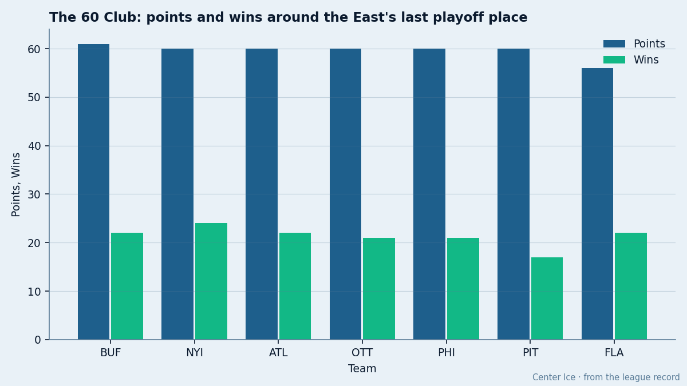
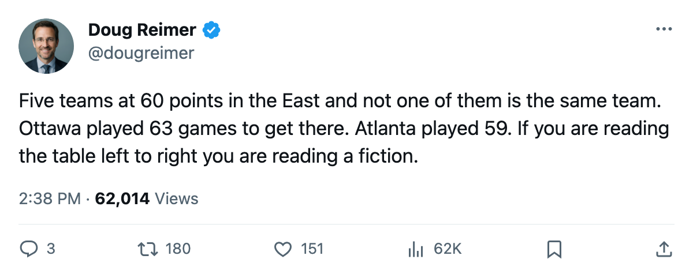
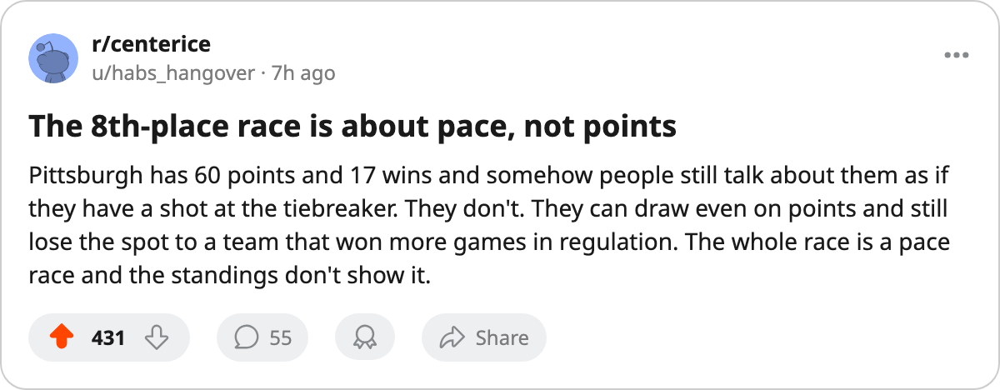

60 Points, 6 Clubs, 4 Games of Schedule: The East's 8th Place Is a Pace Problem
Buffalo holds the line by 1 point. But the teams chasing it have played up to 4 more games than it has, and the ones with the fewest left are the ones with the worst pace.
 Doug ReimerAnalytics editor, ex-video coach · The Slot Report
Doug ReimerAnalytics editor, ex-video coach · The Slot Report
 Buffalo Sabres sits 8th in the Eastern Conference at 61 points through 59 games. Six clubs sit within 5 points of it. Five sit within 1. The tiebreakers, the games in hand, and the pace all point the same way: the standings table flatters the clubs that have played the most games and punishes the ones that have not.
Buffalo Sabres sits 8th in the Eastern Conference at 61 points through 59 games. Six clubs sit within 5 points of it. Five sit within 1. The tiebreakers, the games in hand, and the pace all point the same way: the standings table flatters the clubs that have played the most games and punishes the ones that have not.
Buffalo Sabres holds 8th. Behind it:  New York Islanders,
New York Islanders,  Atlanta Thrashers,
Atlanta Thrashers,  Ottawa Senators,
Ottawa Senators,  Philadelphia Flyers and
Philadelphia Flyers and  Pittsburgh Penguins all at 60 points.
Pittsburgh Penguins all at 60 points.  Florida Panthers at 56 is the only club with a visible gap, and even that is 3 points through 61 games, a gap that 2 wins closes.
Florida Panthers at 56 is the only club with a visible gap, and even that is 3 points through 61 games, a gap that 2 wins closes.
The problem is that 60 does not mean the same thing to every club in that group.

Points percentage separates the pack
Buffalo Sabres has played 59 games and has 23 left. Atlanta Thrashers has played 59 and has 23 left. Those two clubs have the most remaining chances to accumulate. Ottawa Senators has played 63, the most in the group, and has 19 left, the fewest. It is 4 games deeper into its schedule than Buffalo and Atlanta for the same number of points.
Points percentage tells you what that 60 means. The Bureau's convention: points per 2 games played.
| Club | GP | PTS | Pts % | Games left | Max possible |
|---|---|---|---|---|---|
| BUF | 59 | 61 | .517 | 23 | 107 |
| ATL | 59 | 60 | .508 | 23 | 106 |
| NYI | 60 | 60 | .500 | 22 | 104 |
| PHI | 61 | 60 | .492 | 21 | 102 |
| PIT | 61 | 60 | .492 | 21 | 102 |
| OTT | 63 | 60 | .476 | 19 | 98 |
| FLA | 61 | 56 | .459 | 21 | 98 |
Buffalo Sabres and Atlanta Thrashers are the only clubs in this group playing above .500 points percentage. That means at their current rate, both project past 80 points over 82 games. The other five sit below the .500 line, and Ottawa Senators at .476 is the worst pace in the group by a clear margin.
The 60 that sits in Ottawa's column is not the same 60 that sits in Atlanta's. Ottawa earned it over 63 games. Atlanta earned it over 59.
What the table hides
A reader scanning the standings sees 5 clubs tied at 60. The desk sees a race between 2 clubs that are above .500 with the most runway and 3 that are below it with less.
Pittsburgh Penguins and Philadelphia Flyers sit at identical points percentage (.492) and identical games remaining (21). They are indistinguishable by pace, and their head-to-head record against each other this season reads 1-0-0 to PHI with 7 games still to go against divisional opponents that are also in this scrum. Neither can pull away on pace alone.
New York Islanders at .500 has the third-best pace, 22 games left, and a schedule that includes 4 more games against the Atlantic Division. It went 4-0-0 against Pittsburgh Penguins this season. If it repeats even half of that against a club fighting for the same spot, the Islanders move ahead on wins.
The wins column matters here because ties in points go to wins. New York Islanders has 24 regulation wins. Buffalo Sabres has 22. Atlanta Thrashers has 22. Ottawa Senators has 21. Philadelphia Flyers has 21. Pittsburgh Penguins has 17, the lowest in the group by 4.
Pittsburgh Penguins at 60 points with 17 regulation wins is in a position where it could draw even with Buffalo on points and still finish behind on the first tiebreaker.
Today's game
Buffalo Sabres plays at Florida Panthers tonight. That is 8th against 14th, a 5-point gap in the standings. Buffalo has played 59, Florida 61. The actual pace gap is .517 to .459, which is wider than 5 points suggests. Florida has played 2 more games and sits 5 points behind. If Buffalo wins tonight, it moves to 63 and Florida stays at 56. If Florida wins, it closes to 2 and Buffalo's lead over the group narrows to 3.
Florida Panthers has won 3 in a row entering tonight. Its schedule is the hardest remaining among this group in terms of quality of opponent, but that is the kind of thing the sheet cannot tell you without a strength-of-schedule column it does not publish.
The one that is actually out of this
Ottawa Senators at .476 with 19 games left and a maximum of 98 is in the worst position among the clubs that look identical on the standings page. It needs to play .684 points percentage over its remaining 19 games to reach 84, which would put it near the pace Buffalo is sustaining right now. That is 13 points from 19 games, a pace no team in this group has managed over a full stretch this season.
Ottawa's season series against the other clubs in this scrum: 2-1-1 against Buffalo Sabres (5 games complete, 1 game still to come in March), 1-1-1 against New York Islanders. It has played Buffalo the most among this group and gone even.
What I would watch
The next 10 days. Atlanta Thrashers plays at  Vancouver Canucks tomorrow, a club 21 points ahead of it, but Atlanta Thrashers then turns around and plays a stretch within this group. New York Islanders plays at
Vancouver Canucks tomorrow, a club 21 points ahead of it, but Atlanta Thrashers then turns around and plays a stretch within this group. New York Islanders plays at  Toronto Maple Leafs tomorrow, also a 40-point gap in the standings, but the Islanders return home to host
Toronto Maple Leafs tomorrow, also a 40-point gap in the standings, but the Islanders return home to host  New York Rangers on the 25th, a club 12 points ahead but in a division where they split their series.
New York Rangers on the 25th, a club 12 points ahead but in a division where they split their series.
The 8th-place line moves every day between now and the trade deadline on what the sheet has as 2005-03-19. Twenty-three days. For the clubs with 23 games left, that is the whole remaining schedule between now and then. For Ottawa Senators, with 19 left, a third of its remaining calendar falls before the deadline passes.

